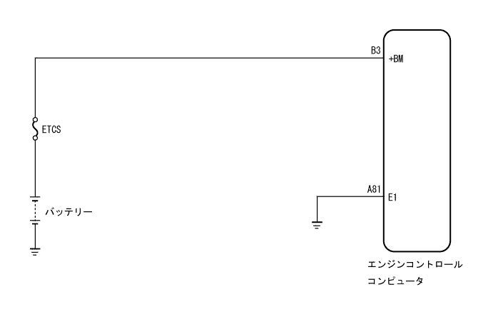
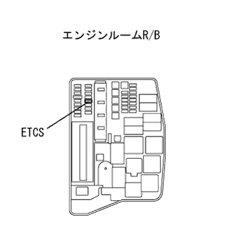
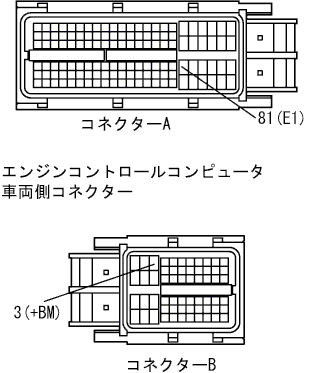

DTC P2118/89 Electronic Throttle Actuator Power Source Malfunction |
| DTCNo. SAE/TCCS | DTC Detection Condition
| Inspection Area |
|---|---|---|
| P2118/89 |
|
|

| Step 1 | Read TaSCAN Data (+BM Voltage) |
Connect SST (TaSCAN) to DLC3.
Turn IG ON.
Using SST (TaSCAN), operate according to the screen display and select [ECU Data Monitor].
Read [+BM Voltage] displayed on SST (TaSCAN).
|
| ||||
| OK | ||
| ||
| Step 2 | Inspect Fuse (ETCS Fuse) |
 |
Remove the ETCS fuse from the engine room R/B.
Using SST (Toyota electrical tester), measure the resistance between the terminals.
| Inspection terminal fuse | Condition | Standard |
|---|---|---|
| ETCS Fuse | Always | Below 1 Ω |
|
| ||||
| OK | |
| Step 3 | Inspect Wire Harness and Connector (Engine Control Computer - Battery) |
ReferenceConnect the ETCS fuse.
Disconnect connector A and connector B of the engine control computer.
 |
Using SST (Toyota electrical tester), measure the voltage between the terminals. (For Terminals of ECU, see)
| Tester Connection (Terminal Symbol) | Condition | Standard |
|---|---|---|
| B3(+BM)←→A81(E1) | Always | 11 to 14V |
|
| ||||
| OK | ||
| ||